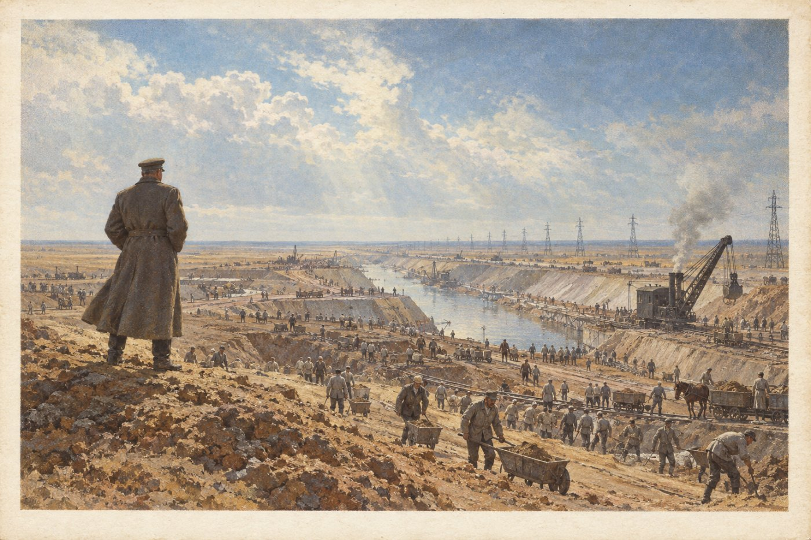

§3. Твёрдая рука (1930-е)

В 1929 году в Америке начался биржевой крах, и за два года кризис дошёл до каждой русской деревни. Цена на зерно за границей упала втрое. Зерно было главным, что республика продавала другим странам, и на эти деньги она покупала уголь, нефть и машины. Теперь платить стало нечем. Кооперативы, которые жили продажей хлеба, разорялись один за другим, а вместе с ними лопались их банки. Крестьяне потеряли сбережения, в городах закрывались заводы.
Дума спорила и ничего не решала. В ноябре 1932 года военный министр генерал Ладыженский ввёл в Москву войска и распустил правительство. Сам он называл это «оздоровлением», а свой порядок «Национальным правлением». Думу не закрыли, но выборы в неё стали формальностью. Газеты проверяла цензура, партии эсеров и кадетов оттеснили от власти, самых упрямых противников высылали в Сибирь или за границу.
Чтобы дать людям работу, правительство начало «Великие работы». Безработных собирали в трудовые армии и отправляли строить плотины на Волге и Каме, рыть каналы в заволжской степи, тянуть электрические линии в деревни. Работали за паёк и небольшое жалованье. Многие стройки тех лет служат до сих пор, но о том, какой ценой они дались, тогда писать не разрешалось.
В стране стало больше порядка и меньше свободы. Союз национального возрождения, единственная разрешённая массовая организация, требовал «Россию для русских». Для евреев ввели ограничения при приёме в университеты, и тысячи семей уехали через Одессу в Америку и Палестину. В 1934 году в Петрограде на публичной лекции националист застрелил одного из вождей либеральной оппозиции. Убийцу судили мягко.
Запомните даты. Ноябрь 1932 года: переворот генерала Ладыженского. 1933–1939 годы: Великие работы.
Вопрос. Почему многие люди в 1932 году обрадовались перевороту? О чём они могли пожалеть через несколько лет?